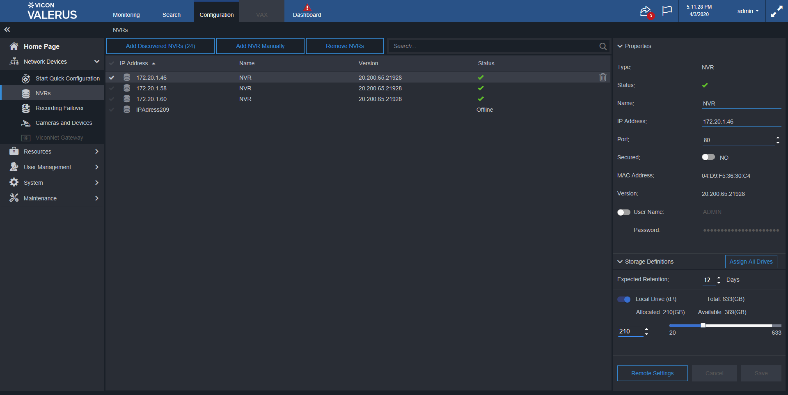
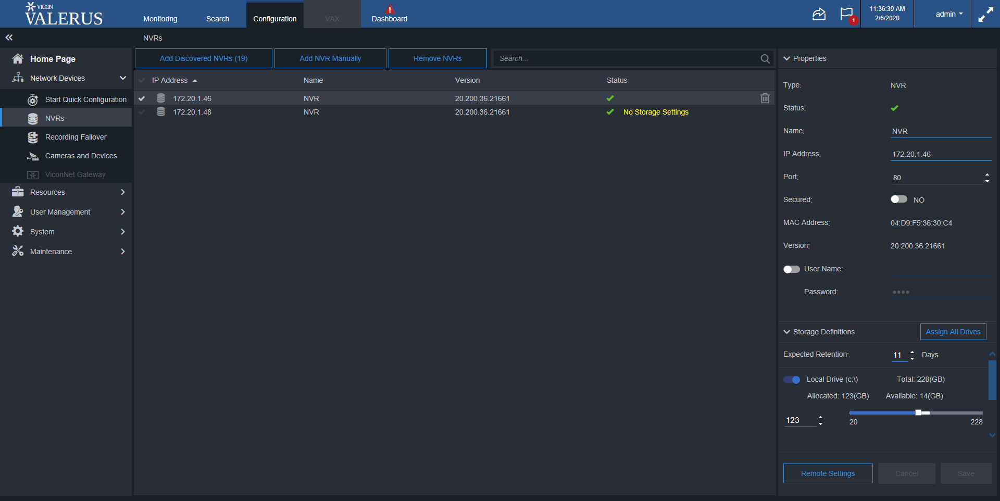

Total Tests
Total Steps
Total Time Taken (Current Run)
0h 38m 10s+801ms
Total Time Taken (Overall)
0h 38m 10s+801ms
Start
2020-02-04 10:42:12
End
2020-02-04 11:20:23
Pass Percentage
Environment
| Param | Value |
|---|---|
| User Name | popatb |
| OS | Windows 10 |
| Java Version | 1.8.0_202 |
| Host Name | BORSE-PC |
Tests
-
ChangeIPAdressExitPressSaveUnsavedChangesTest fail2020-02-04 10:45:55 2020-02-04 10:47:36 0h 1m 40s+711ms
Status Timestamp Details 10:45:55 If status for NVR 172.20.1.46 isn't 'Online' than delete it 10:45:56 If NVR 172.20.1.46 isn't exist - add it 10:45:56 Changing NVR IP Adress from 172.20.1.46 to IP9 and press 'Save' on the 'Unsaved changes' window 10:46:51 Check that Cancel button is enable after name changes 10:46:51 Check that Save button is enable after name changes 10:47:09 Check that Search page is loaded 10:47:36 java.lang.NullPointerException at testcases.NVRsElementsTest.ChangeIPAdressExitPressSaveUnsavedChangesTest(NVRsElementsTest.java:472) at sun.reflect.NativeMethodAccessorImpl.invoke0(Native Method) at sun.reflect.NativeMethodAccessorImpl.invoke(NativeMethodAccessorImpl.java:62) at sun.reflect.DelegatingMethodAccessorImpl.invoke(DelegatingMethodAccessorImpl.java:43) at java.lang.reflect.Method.invoke(Method.java:498) at org.testng.internal.MethodInvocationHelper.invokeMethod(MethodInvocationHelper.java:133) at org.testng.internal.TestInvoker.invokeMethod(TestInvoker.java:584) at org.testng.internal.TestInvoker.invokeTestMethod(TestInvoker.java:172) at org.testng.internal.MethodRunner.runInSequence(MethodRunner.java:46) at org.testng.internal.TestInvoker$MethodInvocationAgent.invoke(TestInvoker.java:804) at org.testng.internal.TestInvoker.invokeTestMethods(TestInvoker.java:145) at org.testng.internal.TestMethodWorker.invokeTestMethods(TestMethodWorker.java:146) at org.testng.internal.TestMethodWorker.run(TestMethodWorker.java:128) at java.util.ArrayList.forEach(ArrayList.java:1257) at org.testng.TestRunner.privateRun(TestRunner.java:770) at org.testng.TestRunner.run(TestRunner.java:591) at org.testng.SuiteRunner.runTest(SuiteRunner.java:402) at org.testng.SuiteRunner.runSequentially(SuiteRunner.java:396) at org.testng.SuiteRunner.privateRun(SuiteRunner.java:355) at org.testng.SuiteRunner.run(SuiteRunner.java:304) at org.testng.SuiteRunnerWorker.runSuite(SuiteRunnerWorker.java:53) at org.testng.SuiteRunnerWorker.run(SuiteRunnerWorker.java:96) at org.testng.TestNG.runSuitesSequentially(TestNG.java:1180) at org.testng.TestNG.runSuitesLocally(TestNG.java:1102) at org.testng.TestNG.runSuites(TestNG.java:1032) at org.testng.TestNG.run(TestNG.java:1000) at org.testng.remote.AbstractRemoteTestNG.run(AbstractRemoteTestNG.java:115) at org.testng.remote.RemoteTestNG.initAndRun(RemoteTestNG.java:251) at org.testng.remote.RemoteTestNG.main(RemoteTestNG.java:77)
10:47:36 Screenshot is below: 
-
CheckPropertiesAfterChangeUserNameTest pass2020-02-04 10:48:38 2020-02-04 10:51:18 0h 2m 39s+597ms
Status Timestamp Details 10:50:29 Check that after changing in User Name field there are not changing in another fields 10:51:18 Test is passed -
IncreasePortExitPressDontSaveUnsavedChangesTest fail2020-02-04 10:52:16 2020-02-04 10:55:19 0h 3m 3s+196ms
Status Timestamp Details 10:52:16 If status for NVR 172.20.1.46 isn't 'Online' than delete it 10:52:36 If NVR 172.20.1.46 isn't exist - add it 10:55:18 Increase port number for NVR172.20.1.46 and press 'Cancel' 10:55:19 Check that Cancel button is enable after name changes 10:55:19 java.lang.AssertionError: did not expect to find [true] but found [false] at org.testng.Assert.fail(Assert.java:97) at org.testng.Assert.failNotEquals(Assert.java:969) at org.testng.Assert.assertTrue(Assert.java:43) at org.testng.Assert.assertTrue(Assert.java:53) at testcases.NVRsElementsTest.IncreasePortExitPressDontSaveUnsavedChangesTest(NVRsElementsTest.java:851) at sun.reflect.NativeMethodAccessorImpl.invoke0(Native Method) at sun.reflect.NativeMethodAccessorImpl.invoke(NativeMethodAccessorImpl.java:62) at sun.reflect.DelegatingMethodAccessorImpl.invoke(DelegatingMethodAccessorImpl.java:43) at java.lang.reflect.Method.invoke(Method.java:498) at org.testng.internal.MethodInvocationHelper.invokeMethod(MethodInvocationHelper.java:133) at org.testng.internal.TestInvoker.invokeMethod(TestInvoker.java:584) at org.testng.internal.TestInvoker.invokeTestMethod(TestInvoker.java:172) at org.testng.internal.MethodRunner.runInSequence(MethodRunner.java:46) at org.testng.internal.TestInvoker$MethodInvocationAgent.invoke(TestInvoker.java:804) at org.testng.internal.TestInvoker.invokeTestMethods(TestInvoker.java:145) at org.testng.internal.TestMethodWorker.invokeTestMethods(TestMethodWorker.java:146) at org.testng.internal.TestMethodWorker.run(TestMethodWorker.java:128) at java.util.ArrayList.forEach(ArrayList.java:1257) at org.testng.TestRunner.privateRun(TestRunner.java:770) at org.testng.TestRunner.run(TestRunner.java:591) at org.testng.SuiteRunner.runTest(SuiteRunner.java:402) at org.testng.SuiteRunner.runSequentially(SuiteRunner.java:396) at org.testng.SuiteRunner.privateRun(SuiteRunner.java:355) at org.testng.SuiteRunner.run(SuiteRunner.java:304) at org.testng.SuiteRunnerWorker.runSuite(SuiteRunnerWorker.java:53) at org.testng.SuiteRunnerWorker.run(SuiteRunnerWorker.java:96) at org.testng.TestNG.runSuitesSequentially(TestNG.java:1180) at org.testng.TestNG.runSuitesLocally(TestNG.java:1102) at org.testng.TestNG.runSuites(TestNG.java:1032) at org.testng.TestNG.run(TestNG.java:1000) at org.testng.remote.AbstractRemoteTestNG.run(AbstractRemoteTestNG.java:115) at org.testng.remote.RemoteTestNG.initAndRun(RemoteTestNG.java:251) at org.testng.remote.RemoteTestNG.main(RemoteTestNG.java:77)
10:55:19 Screenshot is below: -
ChangeUserNameExitPressSaveUnsavedChangesTest fail2020-02-04 10:56:22 2020-02-04 10:57:08 0h 0m 45s+772ms
Status Timestamp Details 10:56:22 If status for NVR 172.20.1.46 isn't 'Online' than delete it 10:56:41 If NVR 172.20.1.46 isn't exist - add it 10:57:08 java.lang.NullPointerException at pageObjects.NVRsPage.IfNVRIsNotExistAddIt(NVRsPage.java:956) at testcases.NVRsElementsTest.ChangeUserNameExitPressSaveUnsavedChangesTest(NVRsElementsTest.java:1056) at sun.reflect.NativeMethodAccessorImpl.invoke0(Native Method) at sun.reflect.NativeMethodAccessorImpl.invoke(NativeMethodAccessorImpl.java:62) at sun.reflect.DelegatingMethodAccessorImpl.invoke(DelegatingMethodAccessorImpl.java:43) at java.lang.reflect.Method.invoke(Method.java:498) at org.testng.internal.MethodInvocationHelper.invokeMethod(MethodInvocationHelper.java:133) at org.testng.internal.TestInvoker.invokeMethod(TestInvoker.java:584) at org.testng.internal.TestInvoker.invokeTestMethod(TestInvoker.java:172) at org.testng.internal.MethodRunner.runInSequence(MethodRunner.java:46) at org.testng.internal.TestInvoker$MethodInvocationAgent.invoke(TestInvoker.java:804) at org.testng.internal.TestInvoker.invokeTestMethods(TestInvoker.java:145) at org.testng.internal.TestMethodWorker.invokeTestMethods(TestMethodWorker.java:146) at org.testng.internal.TestMethodWorker.run(TestMethodWorker.java:128) at java.util.ArrayList.forEach(ArrayList.java:1257) at org.testng.TestRunner.privateRun(TestRunner.java:770) at org.testng.TestRunner.run(TestRunner.java:591) at org.testng.SuiteRunner.runTest(SuiteRunner.java:402) at org.testng.SuiteRunner.runSequentially(SuiteRunner.java:396) at org.testng.SuiteRunner.privateRun(SuiteRunner.java:355) at org.testng.SuiteRunner.run(SuiteRunner.java:304) at org.testng.SuiteRunnerWorker.runSuite(SuiteRunnerWorker.java:53) at org.testng.SuiteRunnerWorker.run(SuiteRunnerWorker.java:96) at org.testng.TestNG.runSuitesSequentially(TestNG.java:1180) at org.testng.TestNG.runSuitesLocally(TestNG.java:1102) at org.testng.TestNG.runSuites(TestNG.java:1032) at org.testng.TestNG.run(TestNG.java:1000) at org.testng.remote.AbstractRemoteTestNG.run(AbstractRemoteTestNG.java:115) at org.testng.remote.RemoteTestNG.initAndRun(RemoteTestNG.java:251) at org.testng.remote.RemoteTestNG.main(RemoteTestNG.java:77)
10:57:08 Screenshot is below: 
-
uDecreasePortExitPressSaveUnsavedChangesTest fail2020-02-04 10:58:04 2020-02-04 11:01:10 0h 3m 5s+854ms
Status Timestamp Details 10:58:04 If status for NVR 172.20.1.46 isn't 'Online' than delete it 10:58:24 If NVR 172.20.1.46 isn't exist - add it 11:01:08 Decrease port number for NVR172.20.1.46 11:01:09 Check that Cancel button is enable after name changes 11:01:10 java.lang.AssertionError: did not expect to find [true] but found [false] at org.testng.Assert.fail(Assert.java:97) at org.testng.Assert.failNotEquals(Assert.java:969) at org.testng.Assert.assertTrue(Assert.java:43) at org.testng.Assert.assertTrue(Assert.java:53) at testcases.NVRsElementsTest.uDecreasePortExitPressSaveUnsavedChangesTest(NVRsElementsTest.java:901) at sun.reflect.NativeMethodAccessorImpl.invoke0(Native Method) at sun.reflect.NativeMethodAccessorImpl.invoke(NativeMethodAccessorImpl.java:62) at sun.reflect.DelegatingMethodAccessorImpl.invoke(DelegatingMethodAccessorImpl.java:43) at java.lang.reflect.Method.invoke(Method.java:498) at org.testng.internal.MethodInvocationHelper.invokeMethod(MethodInvocationHelper.java:133) at org.testng.internal.TestInvoker.invokeMethod(TestInvoker.java:584) at org.testng.internal.TestInvoker.invokeTestMethod(TestInvoker.java:172) at org.testng.internal.MethodRunner.runInSequence(MethodRunner.java:46) at org.testng.internal.TestInvoker$MethodInvocationAgent.invoke(TestInvoker.java:804) at org.testng.internal.TestInvoker.invokeTestMethods(TestInvoker.java:145) at org.testng.internal.TestMethodWorker.invokeTestMethods(TestMethodWorker.java:146) at org.testng.internal.TestMethodWorker.run(TestMethodWorker.java:128) at java.util.ArrayList.forEach(ArrayList.java:1257) at org.testng.TestRunner.privateRun(TestRunner.java:770) at org.testng.TestRunner.run(TestRunner.java:591) at org.testng.SuiteRunner.runTest(SuiteRunner.java:402) at org.testng.SuiteRunner.runSequentially(SuiteRunner.java:396) at org.testng.SuiteRunner.privateRun(SuiteRunner.java:355) at org.testng.SuiteRunner.run(SuiteRunner.java:304) at org.testng.SuiteRunnerWorker.runSuite(SuiteRunnerWorker.java:53) at org.testng.SuiteRunnerWorker.run(SuiteRunnerWorker.java:96) at org.testng.TestNG.runSuitesSequentially(TestNG.java:1180) at org.testng.TestNG.runSuitesLocally(TestNG.java:1102) at org.testng.TestNG.runSuites(TestNG.java:1032) at org.testng.TestNG.run(TestNG.java:1000) at org.testng.remote.AbstractRemoteTestNG.run(AbstractRemoteTestNG.java:115) at org.testng.remote.RemoteTestNG.initAndRun(RemoteTestNG.java:251) at org.testng.remote.RemoteTestNG.main(RemoteTestNG.java:77)
11:01:10 Screenshot is below: 
-
ChangePortExitPressDontSaveUnsavedChangesTest fail2020-02-04 11:02:07 2020-02-04 11:03:09 0h 1m 1s+193ms
Status Timestamp Details 11:02:07 If status for NVR 172.20.1.46 isn't 'Online' than delete it 11:02:27 If NVR 172.20.1.46 isn't exist - add it 11:03:09 org.openqa.selenium.JavascriptException: JavaScript error (WARNING: The server did not provide any stacktrace information) Command duration or timeout: 0 milliseconds Build info: version: '3.9.1', revision: '63f7b50', time: '2018-02-07T22:25:02.294Z' System info: host: 'BORSE-PC', ip: '172.20.1.42', os.name: 'Windows 10', os.arch: 'amd64', os.version: '10.0', java.version: '1.8.0_202' Driver info: org.openqa.selenium.ie.InternetExplorerDriver Capabilities {browserName: internet explorer, javascriptEnabled: true, pageLoadStrategy: normal, platform: WINDOWS, platformName: WINDOWS, se:ieOptions: {browserAttachTimeout: 0, elementScrollBehavior: 0, enableElementCacheCleanup: true, enablePersistentHover: true, ie.browserCommandLineSwitches: , ie.enableFullPageScreenshot: true, ie.ensureCleanSession: true, ie.fileUploadDialogTimeout: 3000, ie.forceCreateProcessApi: false, ie.forceShellWindowsApi: false, ie.useLegacyFileUploadDialogHandling: false, ignoreProtectedModeSettings: true, ignoreZoomSetting: false, initialBrowserUrl: http://localhost:23263/, nativeEvents: true, requireWindowFocus: false}, unexpectedAlertBehaviour: dismiss, unhandledPromptBehavior: dismiss, version: 11} Session ID: 31b5dae6-3c8d-4796-a949-6a56508e7cf6 at sun.reflect.NativeConstructorAccessorImpl.newInstance0(Native Method) at sun.reflect.NativeConstructorAccessorImpl.newInstance(NativeConstructorAccessorImpl.java:62) at sun.reflect.DelegatingConstructorAccessorImpl.newInstance(DelegatingConstructorAccessorImpl.java:45) at java.lang.reflect.Constructor.newInstance(Constructor.java:423) at org.openqa.selenium.remote.ErrorHandler.createThrowable(ErrorHandler.java:214) at org.openqa.selenium.remote.ErrorHandler.throwIfResponseFailed(ErrorHandler.java:166) at org.openqa.selenium.remote.http.JsonHttpResponseCodec.reconstructValue(JsonHttpResponseCodec.java:40) at org.openqa.selenium.remote.http.AbstractHttpResponseCodec.decode(AbstractHttpResponseCodec.java:80) at org.openqa.selenium.remote.http.AbstractHttpResponseCodec.decode(AbstractHttpResponseCodec.java:44) at org.openqa.selenium.remote.HttpCommandExecutor.execute(HttpCommandExecutor.java:160) at org.openqa.selenium.remote.service.DriverCommandExecutor.execute(DriverCommandExecutor.java:83) at org.openqa.selenium.remote.RemoteWebDriver.execute(RemoteWebDriver.java:601) at org.openqa.selenium.remote.RemoteWebDriver.executeScript(RemoteWebDriver.java:537) at Utilities.Page.JavaScriptClick(Page.java:757) at pageObjects.NVRsPage.AddDiscoveredNVRs(NVRsPage.java:934) at pageObjects.NVRsPage.IfNVRIsNotExistAddIt(NVRsPage.java:955) at testcases.NVRsElementsTest.ChangePortExitPressDontSaveUnsavedChangesTest(NVRsElementsTest.java:616) at sun.reflect.NativeMethodAccessorImpl.invoke0(Native Method) at sun.reflect.NativeMethodAccessorImpl.invoke(NativeMethodAccessorImpl.java:62) at sun.reflect.DelegatingMethodAccessorImpl.invoke(DelegatingMethodAccessorImpl.java:43) at java.lang.reflect.Method.invoke(Method.java:498) at org.testng.internal.MethodInvocationHelper.invokeMethod(MethodInvocationHelper.java:133) at org.testng.internal.TestInvoker.invokeMethod(TestInvoker.java:584) at org.testng.internal.TestInvoker.invokeTestMethod(TestInvoker.java:172) at org.testng.internal.MethodRunner.runInSequence(MethodRunner.java:46) at org.testng.internal.TestInvoker$MethodInvocationAgent.invoke(TestInvoker.java:804) at org.testng.internal.TestInvoker.invokeTestMethods(TestInvoker.java:145) at org.testng.internal.TestMethodWorker.invokeTestMethods(TestMethodWorker.java:146) at org.testng.internal.TestMethodWorker.run(TestMethodWorker.java:128) at java.util.ArrayList.forEach(ArrayList.java:1257) at org.testng.TestRunner.privateRun(TestRunner.java:770) at org.testng.TestRunner.run(TestRunner.java:591) at org.testng.SuiteRunner.runTest(SuiteRunner.java:402) at org.testng.SuiteRunner.runSequentially(SuiteRunner.java:396) at org.testng.SuiteRunner.privateRun(SuiteRunner.java:355) at org.testng.SuiteRunner.run(SuiteRunner.java:304) at org.testng.SuiteRunnerWorker.runSuite(SuiteRunnerWorker.java:53) at org.testng.SuiteRunnerWorker.run(SuiteRunnerWorker.java:96) at org.testng.TestNG.runSuitesSequentially(TestNG.java:1180) at org.testng.TestNG.runSuitesLocally(TestNG.java:1102) at org.testng.TestNG.runSuites(TestNG.java:1032) at org.testng.TestNG.run(TestNG.java:1000) at org.testng.remote.AbstractRemoteTestNG.run(AbstractRemoteTestNG.java:115) at org.testng.remote.RemoteTestNG.initAndRun(RemoteTestNG.java:251) at org.testng.remote.RemoteTestNG.main(RemoteTestNG.java:77)11:03:09 Screenshot is below: 
-
ChangeIPAdressExitPressDontSaveUnsavedChangesTest pass2020-02-04 11:04:04 2020-02-04 11:07:51 0h 3m 47s+505ms
Status Timestamp Details 11:04:04 If status for NVR 172.20.1.46 isn't 'Online' than delete it 11:04:08 If NVR 172.20.1.46 isn't exist - add it 11:05:55 Changing NVR IP Adress from 172.20.1.46 to 172.20.1.46IP77 and press 'Do not save' on the 'Unsaved changes' window 11:06:47 Change IP address 172.20.1.46 to 172.20.1.46IP77 11:06:49 Check that Cancel button is enable after name changes 11:06:50 Check that Save button is enable after name changes 11:06:50 Go to Monitoring page 11:06:52 Press don't save button on unsaved changes dialog 11:07:06 Check that Monitoring page is loaded 11:07:07 Go to NVRs page 11:07:30 Click on the device 172.20.1.46 11:07:32 Check that change isn't saved 11:07:32 Refresh page 11:07:50 Click on the device 172.20.1.46 11:07:51 Check that change isn't saved after refresh 11:07:51 Test is passed -
CheckPropertiesAfterChangePasswordTest pass2020-02-04 11:08:50 2020-02-04 11:09:45 0h 0m 55s+336ms
Status Timestamp Details 11:08:50 Check that after changing in Password field there are not changing in another fields 11:09:45 Test is passed -
CheckPropertiesAfterChangeIPAdressTest pass2020-02-04 11:10:42 2020-02-04 11:11:31 0h 0m 48s+681ms
Status Timestamp Details 11:10:43 Check that after changing in IP Adress field there are not changing in another fields 11:11:31 Test is passed -
ChangePortPressCancelTest pass2020-02-04 11:12:27 2020-02-04 11:12:47 0h 0m 19s+133ms
Status Timestamp Details 11:12:28 Click on 172.20.1.46 NVR 11:12:28 Changing NVR Port for NVR 172.20.1.46 to754 11:12:46 Check that Cancel button is enable after name changes 11:12:46 Check that Save button is enable after name changes 11:12:46 Click on Cancel button 11:12:46 Check that the port isn't changed 11:12:46 Check that Cancel button is disabled after name changes 11:12:46 Check that Save button is disabled after name changes 11:12:47 Test is passed -
DecreasePortExitCancelUnsavedChangesTest fail2020-02-04 11:13:48 2020-02-04 11:14:31 0h 0m 43s+544ms
Status Timestamp Details 11:13:48 If status for NVR 172.20.1.42 isn't 'Online' than delete it 11:13:56 If NVR 172.20.1.42 isn't exist - add it 11:14:24 Increase port number for NVR172.20.1.42 and press 'Cancel' 11:14:26 Check that Cancel button is enable after name changes 11:14:31 java.lang.AssertionError: did not expect to find [true] but found [false] at org.testng.Assert.fail(Assert.java:97) at org.testng.Assert.failNotEquals(Assert.java:969) at org.testng.Assert.assertTrue(Assert.java:43) at org.testng.Assert.assertTrue(Assert.java:53) at testcases.NVRsElementsTest.DecreasePortExitCancelUnsavedChangesTest(NVRsElementsTest.java:811) at sun.reflect.NativeMethodAccessorImpl.invoke0(Native Method) at sun.reflect.NativeMethodAccessorImpl.invoke(NativeMethodAccessorImpl.java:62) at sun.reflect.DelegatingMethodAccessorImpl.invoke(DelegatingMethodAccessorImpl.java:43) at java.lang.reflect.Method.invoke(Method.java:498) at org.testng.internal.MethodInvocationHelper.invokeMethod(MethodInvocationHelper.java:133) at org.testng.internal.TestInvoker.invokeMethod(TestInvoker.java:584) at org.testng.internal.TestInvoker.invokeTestMethod(TestInvoker.java:172) at org.testng.internal.MethodRunner.runInSequence(MethodRunner.java:46) at org.testng.internal.TestInvoker$MethodInvocationAgent.invoke(TestInvoker.java:804) at org.testng.internal.TestInvoker.invokeTestMethods(TestInvoker.java:145) at org.testng.internal.TestMethodWorker.invokeTestMethods(TestMethodWorker.java:146) at org.testng.internal.TestMethodWorker.run(TestMethodWorker.java:128) at java.util.ArrayList.forEach(ArrayList.java:1257) at org.testng.TestRunner.privateRun(TestRunner.java:770) at org.testng.TestRunner.run(TestRunner.java:591) at org.testng.SuiteRunner.runTest(SuiteRunner.java:402) at org.testng.SuiteRunner.runSequentially(SuiteRunner.java:396) at org.testng.SuiteRunner.privateRun(SuiteRunner.java:355) at org.testng.SuiteRunner.run(SuiteRunner.java:304) at org.testng.SuiteRunnerWorker.runSuite(SuiteRunnerWorker.java:53) at org.testng.SuiteRunnerWorker.run(SuiteRunnerWorker.java:96) at org.testng.TestNG.runSuitesSequentially(TestNG.java:1180) at org.testng.TestNG.runSuitesLocally(TestNG.java:1102) at org.testng.TestNG.runSuites(TestNG.java:1032) at org.testng.TestNG.run(TestNG.java:1000) at org.testng.remote.AbstractRemoteTestNG.run(AbstractRemoteTestNG.java:115) at org.testng.remote.RemoteTestNG.initAndRun(RemoteTestNG.java:251) at org.testng.remote.RemoteTestNG.main(RemoteTestNG.java:77)
11:14:31 Screenshot is below: 
-
ChangeIPAdressExitCancelUnsavedChangesTest fail2020-02-04 11:15:46 2020-02-04 11:17:13 0h 1m 26s+993ms
Status Timestamp Details 11:15:46 If status for NVR 172.20.1.46 isn't 'Online' than delete it 11:16:06 If NVR 172.20.1.46 isn't exist - add it 11:17:13 org.openqa.selenium.JavascriptException: JavaScript error (WARNING: The server did not provide any stacktrace information) Command duration or timeout: 0 milliseconds Build info: version: '3.9.1', revision: '63f7b50', time: '2018-02-07T22:25:02.294Z' System info: host: 'BORSE-PC', ip: '172.20.1.42', os.name: 'Windows 10', os.arch: 'amd64', os.version: '10.0', java.version: '1.8.0_202' Driver info: org.openqa.selenium.ie.InternetExplorerDriver Capabilities {browserName: internet explorer, javascriptEnabled: true, pageLoadStrategy: normal, platform: WINDOWS, platformName: WINDOWS, se:ieOptions: {browserAttachTimeout: 0, elementScrollBehavior: 0, enableElementCacheCleanup: true, enablePersistentHover: true, ie.browserCommandLineSwitches: , ie.enableFullPageScreenshot: true, ie.ensureCleanSession: true, ie.fileUploadDialogTimeout: 3000, ie.forceCreateProcessApi: false, ie.forceShellWindowsApi: false, ie.useLegacyFileUploadDialogHandling: false, ignoreProtectedModeSettings: true, ignoreZoomSetting: false, initialBrowserUrl: http://localhost:46204/, nativeEvents: true, requireWindowFocus: false}, unexpectedAlertBehaviour: dismiss, unhandledPromptBehavior: dismiss, version: 11} Session ID: be075a3a-851a-4d32-8e01-0a1a92bda747 at sun.reflect.NativeConstructorAccessorImpl.newInstance0(Native Method) at sun.reflect.NativeConstructorAccessorImpl.newInstance(NativeConstructorAccessorImpl.java:62) at sun.reflect.DelegatingConstructorAccessorImpl.newInstance(DelegatingConstructorAccessorImpl.java:45) at java.lang.reflect.Constructor.newInstance(Constructor.java:423) at org.openqa.selenium.remote.ErrorHandler.createThrowable(ErrorHandler.java:214) at org.openqa.selenium.remote.ErrorHandler.throwIfResponseFailed(ErrorHandler.java:166) at org.openqa.selenium.remote.http.JsonHttpResponseCodec.reconstructValue(JsonHttpResponseCodec.java:40) at org.openqa.selenium.remote.http.AbstractHttpResponseCodec.decode(AbstractHttpResponseCodec.java:80) at org.openqa.selenium.remote.http.AbstractHttpResponseCodec.decode(AbstractHttpResponseCodec.java:44) at org.openqa.selenium.remote.HttpCommandExecutor.execute(HttpCommandExecutor.java:160) at org.openqa.selenium.remote.service.DriverCommandExecutor.execute(DriverCommandExecutor.java:83) at org.openqa.selenium.remote.RemoteWebDriver.execute(RemoteWebDriver.java:601) at org.openqa.selenium.remote.RemoteWebDriver.executeScript(RemoteWebDriver.java:537) at Utilities.Page.JavaScriptClick(Page.java:757) at pageObjects.NVRsPage.AddDiscoveredNVRs(NVRsPage.java:934) at pageObjects.NVRsPage.IfNVRIsNotExistAddIt(NVRsPage.java:955) at testcases.NVRsElementsTest.ChangeIPAdressExitCancelUnsavedChangesTest(NVRsElementsTest.java:353) at sun.reflect.NativeMethodAccessorImpl.invoke0(Native Method) at sun.reflect.NativeMethodAccessorImpl.invoke(NativeMethodAccessorImpl.java:62) at sun.reflect.DelegatingMethodAccessorImpl.invoke(DelegatingMethodAccessorImpl.java:43) at java.lang.reflect.Method.invoke(Method.java:498) at org.testng.internal.MethodInvocationHelper.invokeMethod(MethodInvocationHelper.java:133) at org.testng.internal.TestInvoker.invokeMethod(TestInvoker.java:584) at org.testng.internal.TestInvoker.invokeTestMethod(TestInvoker.java:172) at org.testng.internal.MethodRunner.runInSequence(MethodRunner.java:46) at org.testng.internal.TestInvoker$MethodInvocationAgent.invoke(TestInvoker.java:804) at org.testng.internal.TestInvoker.invokeTestMethods(TestInvoker.java:145) at org.testng.internal.TestMethodWorker.invokeTestMethods(TestMethodWorker.java:146) at org.testng.internal.TestMethodWorker.run(TestMethodWorker.java:128) at java.util.ArrayList.forEach(ArrayList.java:1257) at org.testng.TestRunner.privateRun(TestRunner.java:770) at org.testng.TestRunner.run(TestRunner.java:591) at org.testng.SuiteRunner.runTest(SuiteRunner.java:402) at org.testng.SuiteRunner.runSequentially(SuiteRunner.java:396) at org.testng.SuiteRunner.privateRun(SuiteRunner.java:355) at org.testng.SuiteRunner.run(SuiteRunner.java:304) at org.testng.SuiteRunnerWorker.runSuite(SuiteRunnerWorker.java:53) at org.testng.SuiteRunnerWorker.run(SuiteRunnerWorker.java:96) at org.testng.TestNG.runSuitesSequentially(TestNG.java:1180) at org.testng.TestNG.runSuitesLocally(TestNG.java:1102) at org.testng.TestNG.runSuites(TestNG.java:1032) at org.testng.TestNG.run(TestNG.java:1000) at org.testng.remote.AbstractRemoteTestNG.run(AbstractRemoteTestNG.java:115) at org.testng.remote.RemoteTestNG.initAndRun(RemoteTestNG.java:251) at org.testng.remote.RemoteTestNG.main(RemoteTestNG.java:77)11:17:13 Screenshot is below: 
-
IncreasePortAndPressCancel fail2020-02-04 11:18:14 2020-02-04 11:20:22 0h 2m 7s+275ms
Status Timestamp Details 11:20:01 Increase port number for NVR172.20.1.46 and press 'Cancel' 11:20:22 org.openqa.selenium.TimeoutException: Expected condition failed: waiting for value to contain "false". Current value: "null" (tried for 15 second(s) with 500 MILLISECONDS interval) Build info: version: '3.9.1', revision: '63f7b50', time: '2018-02-07T22:25:02.294Z' System info: host: 'BORSE-PC', ip: '172.20.1.42', os.name: 'Windows 10', os.arch: 'amd64', os.version: '10.0', java.version: '1.8.0_202' Driver info: org.openqa.selenium.ie.InternetExplorerDriver Capabilities {browserName: internet explorer, javascriptEnabled: true, pageLoadStrategy: normal, platform: WINDOWS, platformName: WINDOWS, se:ieOptions: {browserAttachTimeout: 0, elementScrollBehavior: 0, enableElementCacheCleanup: true, enablePersistentHover: true, ie.browserCommandLineSwitches: , ie.enableFullPageScreenshot: true, ie.ensureCleanSession: true, ie.fileUploadDialogTimeout: 3000, ie.forceCreateProcessApi: false, ie.forceShellWindowsApi: false, ie.useLegacyFileUploadDialogHandling: false, ignoreProtectedModeSettings: true, ignoreZoomSetting: false, initialBrowserUrl: http://localhost:38387/, nativeEvents: true, requireWindowFocus: false}, unexpectedAlertBehaviour: dismiss, unhandledPromptBehavior: dismiss, version: 11} Session ID: 4063a5dd-8017-4b96-a007-ef3a3ae0c0ba at org.openqa.selenium.support.ui.WebDriverWait.timeoutException(WebDriverWait.java:82) at org.openqa.selenium.support.ui.FluentWait.until(FluentWait.java:231) at pageObjects.NVRsPage.CancelChangesButton(NVRsPage.java:432) at testcases.NVRsElementsTest.IncreasePortAndPressCancel(NVRsElementsTest.java:776) at sun.reflect.NativeMethodAccessorImpl.invoke0(Native Method) at sun.reflect.NativeMethodAccessorImpl.invoke(NativeMethodAccessorImpl.java:62) at sun.reflect.DelegatingMethodAccessorImpl.invoke(DelegatingMethodAccessorImpl.java:43) at java.lang.reflect.Method.invoke(Method.java:498) at org.testng.internal.MethodInvocationHelper.invokeMethod(MethodInvocationHelper.java:133) at org.testng.internal.TestInvoker.invokeMethod(TestInvoker.java:584) at org.testng.internal.TestInvoker.invokeTestMethod(TestInvoker.java:172) at org.testng.internal.MethodRunner.runInSequence(MethodRunner.java:46) at org.testng.internal.TestInvoker$MethodInvocationAgent.invoke(TestInvoker.java:804) at org.testng.internal.TestInvoker.invokeTestMethods(TestInvoker.java:145) at org.testng.internal.TestMethodWorker.invokeTestMethods(TestMethodWorker.java:146) at org.testng.internal.TestMethodWorker.run(TestMethodWorker.java:128) at java.util.ArrayList.forEach(ArrayList.java:1257) at org.testng.TestRunner.privateRun(TestRunner.java:770) at org.testng.TestRunner.run(TestRunner.java:591) at org.testng.SuiteRunner.runTest(SuiteRunner.java:402) at org.testng.SuiteRunner.runSequentially(SuiteRunner.java:396) at org.testng.SuiteRunner.privateRun(SuiteRunner.java:355) at org.testng.SuiteRunner.run(SuiteRunner.java:304) at org.testng.SuiteRunnerWorker.runSuite(SuiteRunnerWorker.java:53) at org.testng.SuiteRunnerWorker.run(SuiteRunnerWorker.java:96) at org.testng.TestNG.runSuitesSequentially(TestNG.java:1180) at org.testng.TestNG.runSuitesLocally(TestNG.java:1102) at org.testng.TestNG.runSuites(TestNG.java:1032) at org.testng.TestNG.run(TestNG.java:1000) at org.testng.remote.AbstractRemoteTestNG.run(AbstractRemoteTestNG.java:115) at org.testng.remote.RemoteTestNG.initAndRun(RemoteTestNG.java:251) at org.testng.remote.RemoteTestNG.main(RemoteTestNG.java:77)11:20:22 Screenshot is below:
{kind=link}
{kind=link}